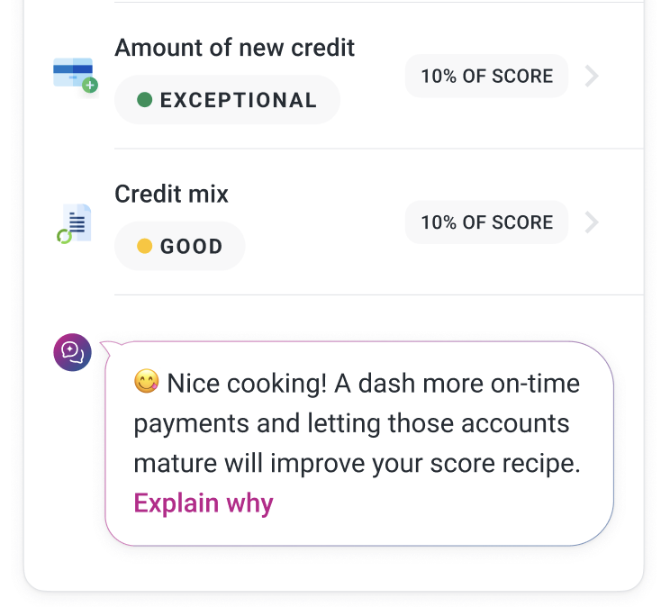
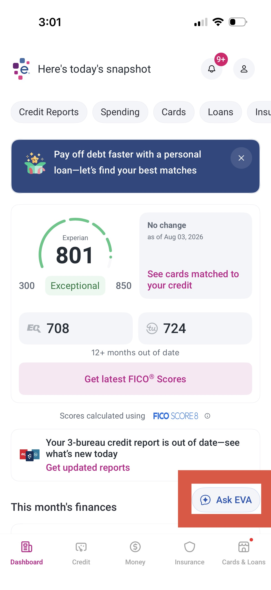

Generative & evaluative research · Experian · Multi-phase
Research ran from open-ended discovery through round after round of usability testing, landing on one finding that changed where help shows up in the product: people don't go looking for it. It has to find them.
Could generative AI actually help everyday people understand credit — and if so, where and how should that help show up inside the product?
Research ran in two phases across many rounds. It started generative: open-ended work exploring how people might use AI to inform themselves about credit. From there it moved evaluative — a long series of usability studies across live builds, competitor products, and prototypes exploring EVA in different roles, including as the product's central experience.
Participants were everyday Experian users, screened by how knowledgeable they believed themselves to be about credit.
A clear Dunning-Kruger pattern showed up across sessions: the more confident someone was in their own credit knowledge, the more likely they were to get frustrated or lost looking for answers.
Users expect education in proximity to the component that confused them in the first place.
That conclusion isn't just a session-by-session pattern — it follows from Gestalt psychology's law of proximity: people perceive elements placed near each other as related. Help placed away from the point of confusion reads as unrelated to it, however good the content is.
Several participants said upfront they'd never use an AI chatbot for something like this — then changed their mind mid-session, once they saw what EVA could actually do.
EVA moved from something users had to go find to something placed directly at the moment of confusion: an evergreen floating CTA available throughout the product, plus contextual CTAs seeded next to known points of friction — so getting help stopped requiring people to first figure out where to ask.

